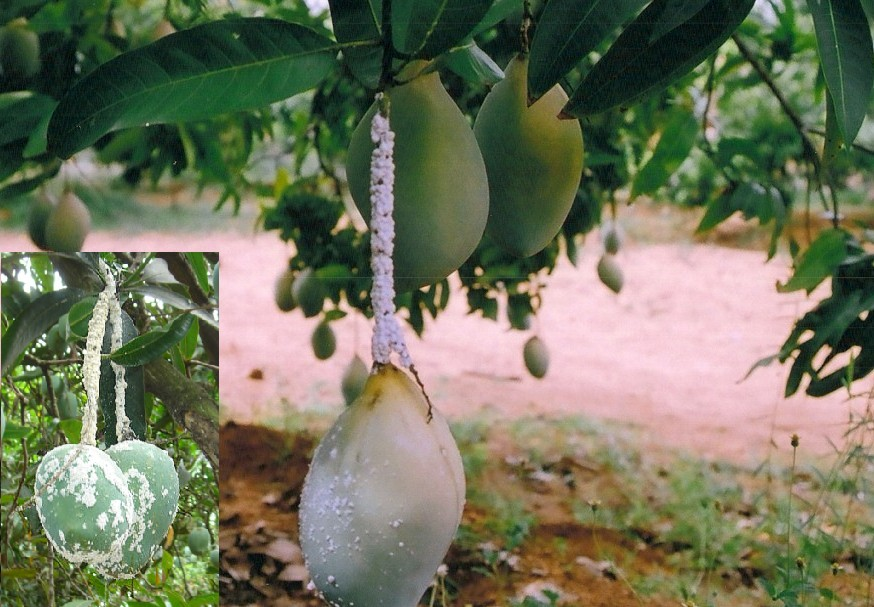

| Home |
Mango |
| 1. Mango Hoppers |
| 2. Stemborer |
| 3. Fruitfly |
| 4. Mango Nut Weevil |
| 5. Mango Mealy Bug |
| 6. Bark Eating Caterpillar |
| 7. Flower Gall Midge |
| 8. Mango Leaf Webber |
| 9. Shoot Borer |
| 10. Leaf Caterpillar |
| 11. Flower Webber |
| Questions |
| Download Notes |
Pests of Mango :: Major Pests :: Mango Mealy Bug
5. Mango mealy bug: Drosicha mangiferae (Pseudococcidae: Hemiptera)
Distribution and Status : India, Bangladesh, China and South East Asia
Host range : Mango, apple, apricot, ber, cherry, Citrus spp., fig, grape vine, guava, jack, jamun, litchi, mulberry and pomegranate.
Damage symptoms: Damages caused by nymphs and wingless females. They infest the leaves and inflorescence. Nymphs climb up the tree congregate together and suck juice from young shoots, panicles and flower pedicels. The affected parts dry up and yield is reduced substantially.
|
|
 |
 |
Bionomics : Oval, shining pink eggs laid in the soil upto 15 cm. Egg hatching starts at the end of December and continues upto month. First instar nymphs climb and ascend the trees immediately. They pass 3 nymphal instars. Adult longetivity for male and female are 7 and 15-35 days respectively. Female lays eggs for 22-47 days during april-may. Adults are oval, flat, body covered with white mealy powder. Males have one pair of black wings and are crimson red.
IPM
|
|